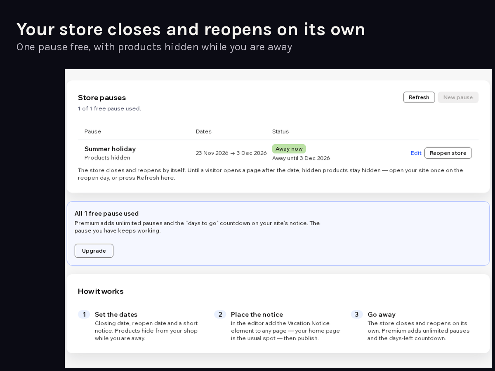

Vacation: Pause Store & Reopen
Pause your store for a holiday, reopen by date
- Your products hide on the closing date
- A notice on your site says when you are back
- The store reopens by itself on the date you set
- Free covers one pause; Premium adds unlimited

What it does
Closing a store for a holiday or a stock count is a few days of manual work: untick every product, write a notice, then remember to undo it all when you are back. This app does the three steps on the dates you set.
In your site's dashboard, schedule a pause: give it a name, pick the closing date and the reopen date, and write the short notice shoppers see. From the closing date the app hides the products on your site, using the same visible switch you can untick by hand in the product list, and shows your notice with the reopen date. On the reopen date it puts everything back and the notice disappears. Press Reopen store at any time to end a pause early.
Add the Vacation Notice element to any page once, and the notice appears only while a pause is running. The app reads the date on each visit, so the store opens on the first visit after the reopen date.
The free plan covers one pause at a time, and the whole job works. Premium adds unlimited pauses and a days-left countdown on the notice. Premium is $4 a month, or $3 a month billed yearly, with a 14-day free trial.
Price
Free
- 1 pause at a time
- Products hide while you are away
- A notice with the reopen date
- Reopens automatically on the date
Premium
$4/month, or $3/month billed yearly ($36/year), 14-day free trial
- Unlimited pauses
- Days-left countdown on the notice
- Plan holidays and stock counts ahead
- Same automatic hide and reopen